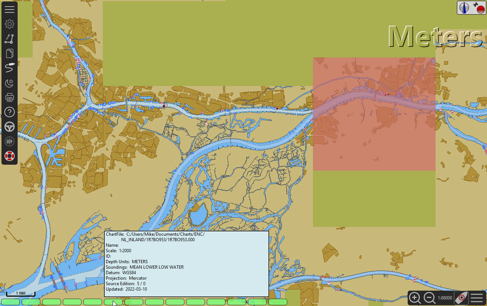

Kaarten
Downloaden en installeren van Inland ECDIS kaarten
Opties 
Kaarten Selecteer het tabblad Chart Downloader
Selecteer catalogus…
Selecteer ChartCatalogs en klik op OK
ENC Elektronische navigatie kaarten zijn kaarten waar de objecten en een hoeveelheid details die nodig zijn om voor binnenland ECDIS te worden geselecteerd door de gebruiker. Deze kaarten worden gebruikt in de Inland ECDIS Informatiemodus.
Selecteer The Nederlandse Inland ENC Kaarten
OK
Een vermelding voor de Nederlandse kaarten verschijnt in de catalogus.
Bijwerken
Geselecteerde kaarten downloaden
Toepassen
Voeg map toe …
Map selecteren
Toepassen OK
Aanpassen van de kaart weergave
Verplaats de basis kaart totdat u Nederland kunt zien.

Aan de rechterkant van het display zijn sommige kaart cellen niet verschenen. Ze worden zichtbaar als de cel naar het midden van het scherm wordt verplaatst, als de cel wordt geladen. Om deze vertraging te voorkomen:
Opties Kaarten
Alle ENC-kaarten voorbereiden
Het kan even duren om alle cellen te laden.
Toepassen OK

Zet Toonkaartgrenzen in Weergavopties Kaart


Een Piano Bar toont de onderkant van het scherm. Dit geeft de beschikbare kaarten aan voor de beeld weergave. Door over de cursor over een vlak (onder) te zweven, wordt het gebied dat door de cel wordt bestreken gemarkeerd en worden informatie over de cel weergegeven, zoals de datum voor het laatst bijgewerkt.
Kaarten bijwerken
|
Kaart updates
Het is belangrijk dat er regelmatig wordt gecontroleerd of de in gebruik zijnde kaarten bijgewerkt moeten worden. https://www.vaarweginformatie.nl/frp/main/ Deze meertalige website heeft links om de nieuwste kaarten te downloaden. |
Opties Kaarten
Chart Downloader
Selecteer catalogus…
Bijwerken
Download kaarten…
Download selected charts
Zeeland Compleet Week 18-2022 kon niet worden bijgewerkt. In dit geval was het nodig om de link te gebruiken:
Hier zie je Zeeland Compleet Week 19-2022. Download en pak de bestanden uit van de zip bestand naar de ENC map. Voeg vervolgens een nieuwe map toe voor de kaarten:
Alle ENC-kaarten voorbereiden
Week 19 bestanden zullen worden gebruikt in plaats van Week 18.
Meer kaaarten toevoegen
Dat is eenvoudig toe te voegen aan de Duitse kaarten.
Opties Kaarten
Selecteer catalogus…
Nieuwe catalogus toevoegen
Blader naar Duitsland Inland ENC Kaarten
OK
Bijwerken
Download kaarten…
Download selected charts
(Dit kan enige tijd duren…)
Er zijn twee 'Over de geldigheids datum' kaarten gevonden.
Download selected charts
Opties Kaarten
Kaartbestanden
Om te voorkomen dat er vertraging optreden bij het samenvoegen.
Alle ENC-kaarten voorbereiden
Toepassen OK
We hebben nu Nederlandse en Duitse ENC-kaarten aan OpenCPN toegevoegd.
Weergaveopties Kaart
Toon kaartgrenzen geeft de beschikbare ENC-cellen weer.

Inzoomen op de kaart details
Aanvullende informatie over de kaart cellen.
Naast de extra details van de standaard grafiekweergave wordt ook extra informatie verstrekt.
Dit is een Oostenrijkse kaart in de nabijheid van Wenen.
rechtsklik
Kaartobjectgegevens…
Het attribuut PICREP heeft een link naar een afbeelding voor de brug.

Interessant om op te merken dat de diepte van 8.5 m wordt weergegeven op de kaart dicht bij de middenlijn van het kanaal. Op de afbeelding is de kruiphoogte 11.22 m beschikbaar in het midden van de brug.

rechtsklik
Het object is een Notificatie markering.
Kenmerk catnmk is het maximaal aantal vaartuigen dat is toegestaan om naast elkaar af te meren.
Kenmerk INFORM is het maximaal aantal vaartuigen dat is toegestaan op ligplaat 3, uitgezonderd vrachtschepen.
Veel meer details voor de codering van IENC: